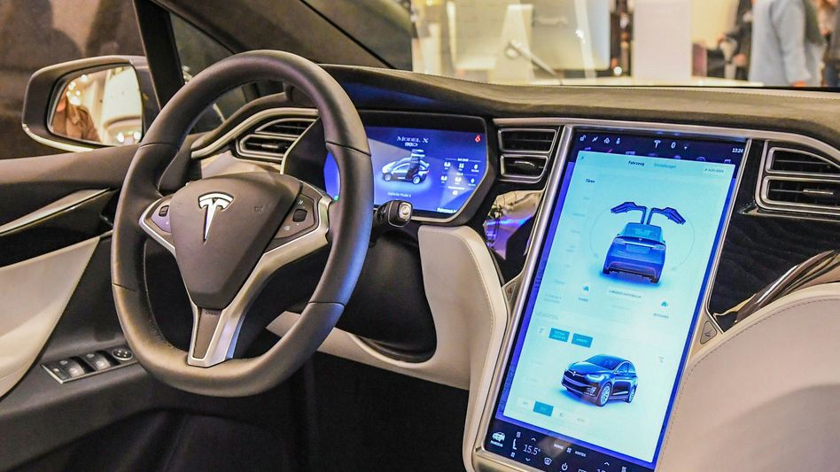

TESLA
Posted on June 2016 / in Tesla


Tesla is an American multinational automotive and clean energy company headquartered in Austin, Texas. Tesla designs and manufactures electric vehicles, battery energy storage from home to grid-scale, solar panels and solar roof tiles, and related products and services.
Tesla was incorporated in July 2003 by Martin Eberhard and Marc Tarpenning as Tesla Motors. The company's name is a tribute to inventor and electrical engineer Nikola Tesla. In February 2004, via a $6.5 million investment, Elon Musk became the largest shareholder of the company. He has served as CEO since 2008. According to Musk, the purpose of Tesla is to help expedite the move to sustainable transport and energy, obtained through electric vehicles and solar power. Tesla began production of its first car model, the Roadster sports car, in 2009. This was followed by the Model S sedan in 2012, the Model X SUV in 2015, the Model 3 sedan in 2017, the Model Y crossover in 2020, and the Semi truck in 2022.
Tesl's Model
- Tesla Model S
- Tesla Model 3
- Tesla Model X
- Tesla Model Y
- Roadster
Tesla has been the subject of many lawsuits, increasing government scrutiny, journalistic criticism, and public controversies arising from statements and acts of CEO Elon Musk and from allegations of creative accounting, whistleblower retaliation, worker rights violations, and unresolved and dangerous technical problems with their products.
TESLA GIGAFACTORY
- Founding
- The company was incorporated as Tesla Motors, Inc. on July 1, 2003, by Martin Eberhard and Marc Tarpenning. Eberhard and Tarpenning served as CEO and CFO, respectively.Eberhard said he wanted to build "a car manufacturer that is also a technology company", with its core technologies as "the battery, the computer software, and the proprietary motor"
- Roadster
- Elon Musk took an active role within the company and oversaw Roadster product design at a detailed level, but was not deeply involved in day-to-day business operations. The company's strategy was to start with a premium sports car aimed at early adopters and then move into more mainstream vehicles, including sedans and affordable compacts.
- IPO, Model S, and Model X
- In May 2010, Tesla purchased what would later become the Tesla Factory in Fremont, California, from Toyota for $42 million, and opened the facility in October 2010 to start production of the Model S. On June 29, 2010, the company became a public company via an initial public offering (IPO) on NASDAQ, the first American car company to do so since the Ford Motor Company had its IPO in 1956. The company issued 13.3 million shares of common stock at a price of $17.00 per share, raising $226 million.
- Tesla Semi
- The Tesla Semi is an all-electric Class 8 semi-trailer truck announced in November 2017. Musk confirmed that two variants would be available: one with 300 miles (480 km) and one with 500 miles (800 km) of range. The Semi will be powered by four independent electric motors of the type used in the Tesla Model 3 and will include an extensive set of hardware sensors to enable it to stay in its own lane, a safe distance away from other vehicles, and later, when software and regulatory conditions allow, provide self-driving operation on highways. Musk also announced that the company would be involved in installing a solar-powered global network of Tesla Megachargers to make the Semi more attractive to potential long-haul customers. A 30-minute charge would provide 400 miles (640 km) of range.